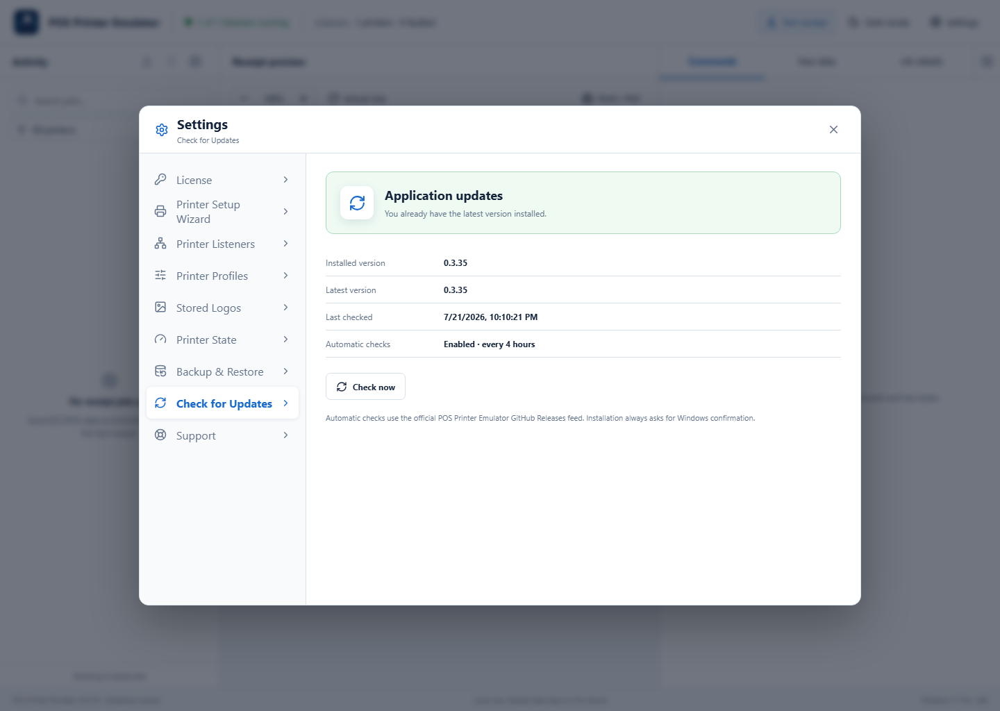

Maintenance feature: Check for Updates is available to Lite, Pro, and Enterprise licenses with active Application Maintenance and Support. The purchased application keeps working after maintenance expires.
1Open the update page
Open Settings → Check for Updates. Review the installed version, latest known version, last check, and automatic-check schedule.
2Check the official release feed
Select Check now. The application uses the official POS Printer Emulator GitHub Releases feed over HTTPS. If the application is current, it confirms that no update is needed.

3Download and install
Select Release details to review the changes, then select Download and install. Save work before proceeding. The application verifies that the download points to the trusted GitHub installer, and Windows asks for confirmation before setup runs.
If the update cannot start
- Confirm the computer can reach GitHub over HTTPS.
- Confirm maintenance is active under Settings → License.
- Run Settings → Support → Connection Diagnostics and save the support package if the problem continues.